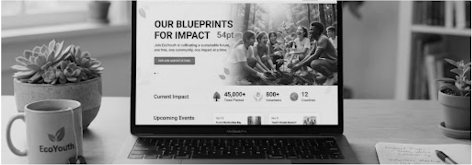
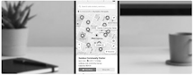

STRUCTURAL EMPATHY
Building Digital Foundations for Social Good.
We architect precise, human-centric digital experiences for mission-driven organizations. Combining the rigor of blueprints with the warmth of community impact.
Featured Projects
Architectural precision applied to real-world impact. Explore our recent collaborations with visionary nonprofits.
Environmental
eco

EcoYouth
Digital infrastructure supporting youth-led environmental initiatives across urban centers.
Community
location_city
City Shelter
Streamlining access to emergency housing resources.

Education
palette
Arts For All
Interactive platform for accessible arts education.

Structural Impact
Measuring the tangible outcomes of well-architected digital solutions in the nonprofit sector.
rocket_launch
45+
Nonprofits Launched
favorite
$12M
Donations Facilitated
public
2M+